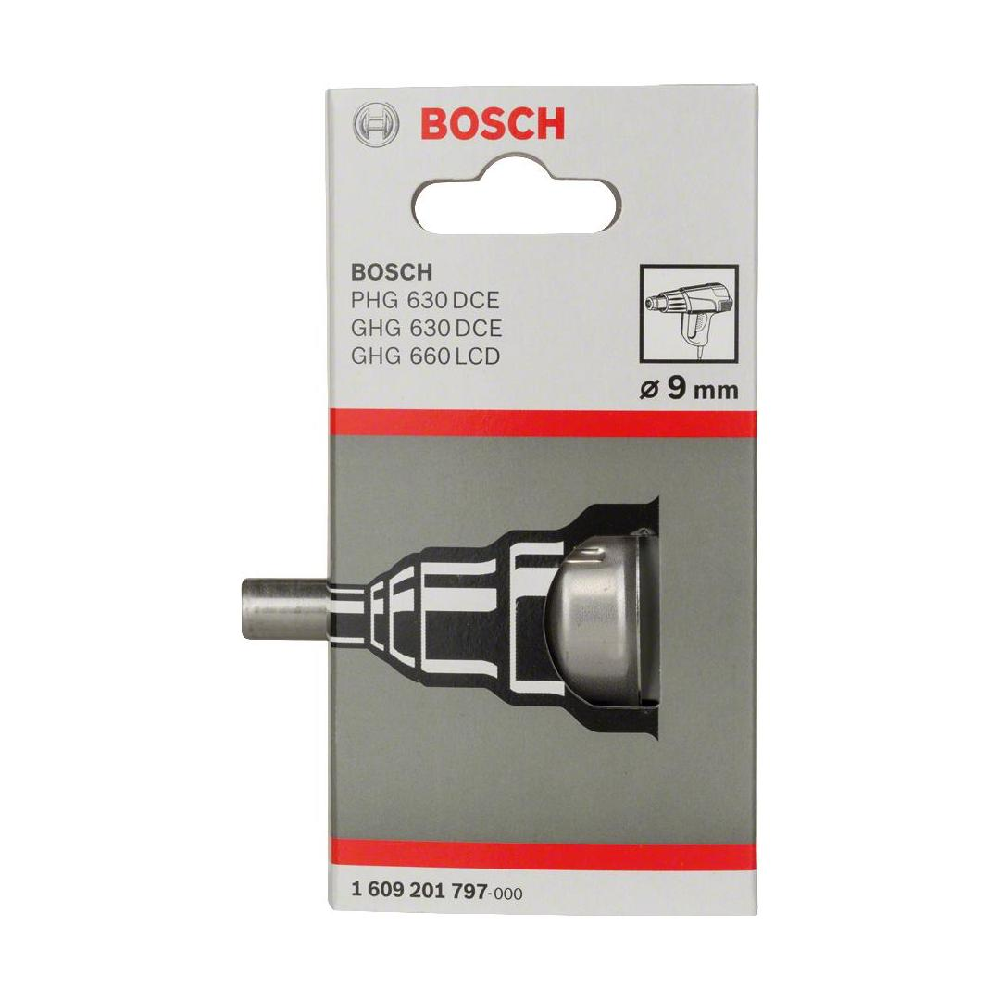
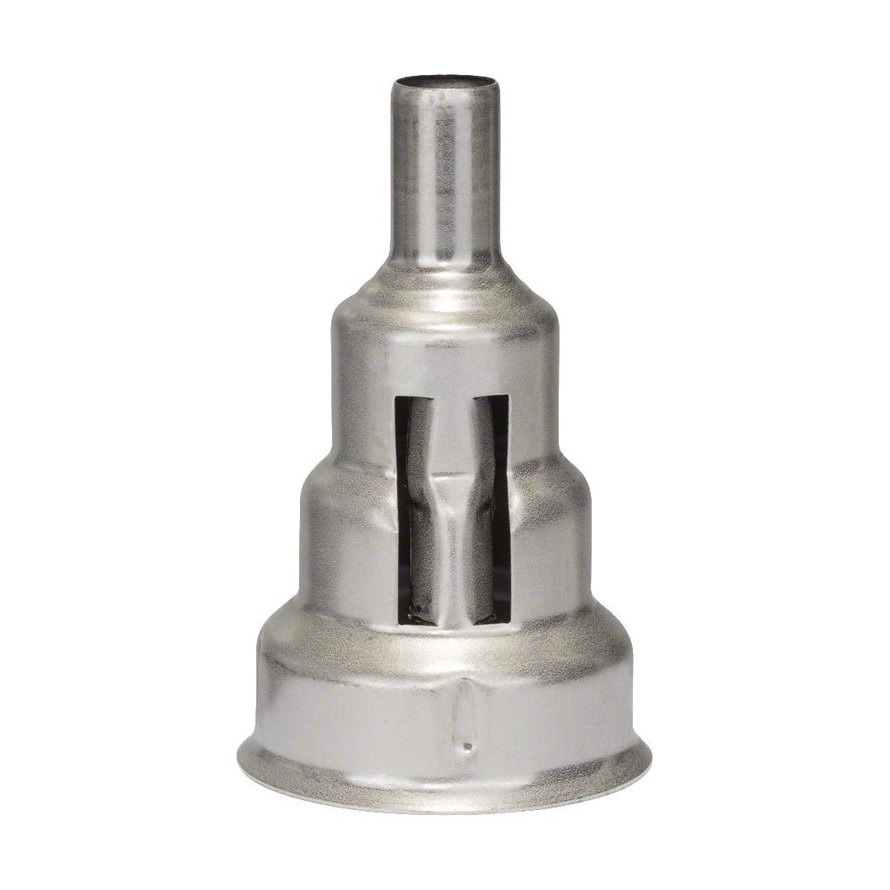

1609201797


| Specification |
9 mm |
| Suitable for |
GHG 18V-50; GHG 20-60; GHG 20-63; GHG 23-66; GHG 600 CE; GHG 630 DCE; GHG 660 LCD Professional; PHG 630 DCE |
| Packaging type |
Paper / Cardboard / Corrugated board - Packaging, carton, with Euro hole |
| Pack quantity |
1 Pcs |
| Minimum order quantity |
1 Pcs |